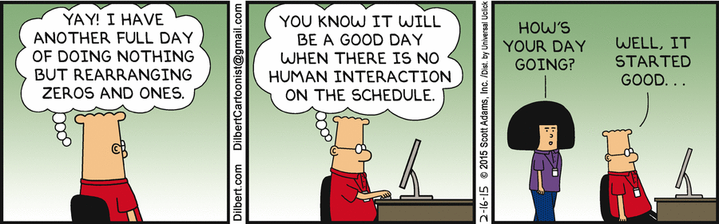
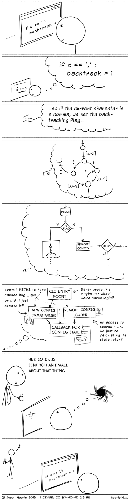

Hi! I'm a programmer, the kind that types cryptic code on a computer all day. But I could be a designer expressing an idea into shapes and colors, an accountant crunching numbers, a copy writer fighting akward grammar, a student reading a book on an obscure topic: the important thing is I'm working on something, trying to solve a problem, and I'm concentrated.
The costs of interruptions have been studied in office environments. An interrupted task is estimated to take twice as long and contain twice as many errors as uninterrupted tasks (Czerwinski:04). Workers have to work in a fragmented state as 57% of tasks are interrupted (Mark:05). Programmer Interrupted
And then someone comes and taps on my shoulder to say hi. Starts talking to me, despite the music in my headphones, to know if I saw the game yesterday. Asks me if I received the mail about this meeting at the end of next week. Or if I know if that other colleague will be there today. To put it shortly: someone interrupts me.
A programmer takes between 10-15 minutes to start editing code after resuming work from an interruption. When interrupted during an edit of a method, only 10% of times did a programmer resume work in less than a minute. A programmer is likely to get just one uninterrupted 2-hour session in a day. Programmer Interrupted
Don't get me wrong: I enjoy talking with people, joking, exchanging ideas, but when I'm working I need to be immersed in my problems. It might look like I'm staring blankly at my screen but believe me: I have something in mind.
The trick here is that when you manage programmers, specifically, task switches take a really, really, really long time. That's because programming is the kind of task where you have to keep a lot of things in your head at once. The more things you remember at once, the more productive you are at programming. Human Task Switches Considered Harmful
Interruptions, like multi-tasking, don't help getting things done. They dumb people down.
Interruptions break your workday into a series of work moments. Forty-five minutes and then you have a call. Fifteen minutes and then you have lunch. An hour later, you have an afternoon meeting. Before you know it, it's five o'clock, and you've only had a couple uninterrupted hours to get your work done. You can't get meaningful things done when you're constantly going start, stop, start, stop.
Getting into that zone takes time and requires avoiding interruptions. It's like REM sleep: You don't just go directly into REM sleep. You go to sleep first and then make your way to REM. Any interruptions force you to start over. And just as REM is when the real sleep magic happens, the alone zone is where the real productivity magic happens. Jason Fried & David Henmeier Hansson ‒ Rework
How to avoid that? Here comes empathy. Ask yourself: in her position, would I like to be interrupted? Is this thing so urgent?
If the answers are "yes" go on, pick-up your phone or go talk directly with your co-worker.
If not, send an email, use IM, wait for the next coffee break. Showing a bit of patience will help your colleague in her work and in the meantime you can focus on another task until you have your answer.
 Dilbert
Thanks!
